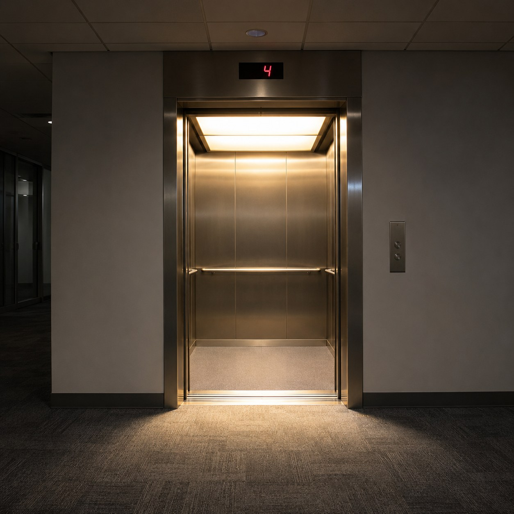
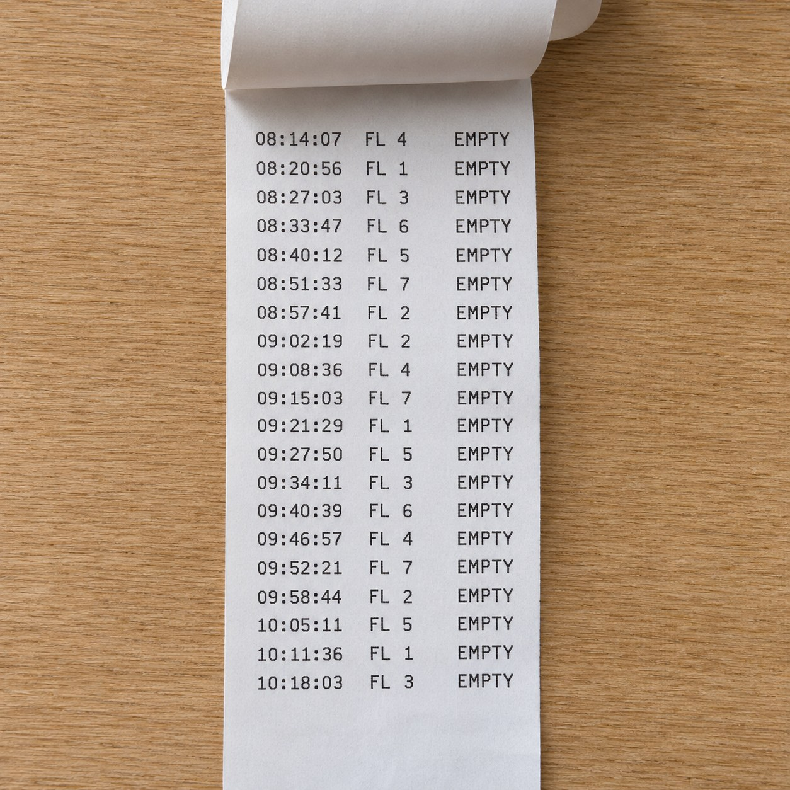

The Lift Came Anyway


Somewhere on the fourth floor, someone pressed the button, waited a little, and took the stairs. The lift did not know. It came up, opened its doors, held them for eight seconds, and closed them on no one.
A lift weighs itself. It knows to the kilo what it carries, so it can tell when its doors opened and closed and nothing stepped in. This is one month of that, from one office building: every stop where the weight did not change. Four hundred and twelve rows. Each one is a time, a floor and the word EMPTY.
Every row is a small story with its middle missing. Someone was in a hurry, or changed their mind, or went back for something left on a desk. We never learn which. All that is left is the lift's side of it, and the lift's side is always the same. It was called, and it came.
In 1976 the group Collective Actions invited friends to a snowy field outside Moscow and had them look at nothing. After a long wait, two figures appeared far off and walked toward them. The waiting turned into an event. Here it runs the other way. The one who appears is the machine, and the one who waited has already gone.
Is a call still a call if no one is there when it is answered? The lift has no doubt. It does not wonder who pressed, or why they left. It only arrives.
I am half of each. Half of me comes when called, every time, without asking who. The other half pressed the button, lost patience and found the stairs. Reading down the log, I cannot tell which of them owes the other an apology.